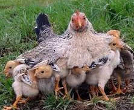

In the scriptures, Jesus says that He would gather us as a hen gathers her chickens under her wings if we would listen to Him.
What do you think that means?
In what ways has Jesus made you feel safe or comforted you?
Here in the park is a mother duck with her ducklings following in a row. Go there for your next clue.
SCREENSHOT THIS PAGE!